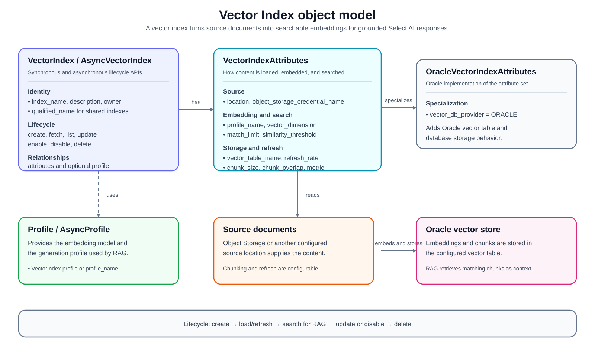

1. Vector Index¶
VectorIndex supports Retrieval Augmented Generation (RAG). It converts
source documents into vector embeddings, stores the embeddings in a vector
store, and links the vector index to a Select AI profile. When that profile is
used for natural language generation, Select AI can retrieve semantically
similar content from the vector index and use that content as grounding context
for the response.
A vector index is useful when the answer should come from files or documents that are not represented as relational tables. Typical sources include documents in Object Storage, product manuals, generated reports, logs, JSON files, and other text-heavy content that should be searched by meaning rather than exact keywords.
Before creating a vector index, make sure the database user has:
A Select AI profile with an AI provider that supports embeddings.
A credential for the AI provider used by the profile.
A credential for the object storage location if the source objects are not public.
Network access to the AI provider endpoint and the source location. See Privileges for network ACL helpers.
The usual lifecycle is:
Create a profile with a provider and embedding model.
Create
OracleVectorIndexAttributeswith the source location and storage credential.Create
VectorIndexand callcreate().Use the linked profile for RAG actions such as
narrate().Fetch, list, update, disable, enable, or delete the index as needed.
2. VectorIndex Object Model¶


3. VectorIndexAttributes¶
A VectorIndexAttributes object can be created with
select_ai.VectorIndexAttributes(). Also check
vector index attributes
For Oracle vector indexes, use OracleVectorIndexAttributes. It sets
vector_db_provider to VectorDBProvider.ORACLE and is the preferred
attribute class for the examples in this guide.
Common attributes:
Attribute |
Use |
|---|---|
|
Object Storage URI or source location containing the documents to embed. |
|
Credential used to read the source location. |
|
Select AI profile used to create embeddings and answer RAG prompts.
If omitted during |
|
Control how source text is split before embedding. Larger chunks keep more context together; overlap helps preserve context across chunk boundaries. |
|
Maximum number of matching chunks returned during semantic search. |
|
Minimum similarity score required for retrieved chunks to be considered relevant. |
|
Distance metric used to compare embeddings. Supported values include
|
|
Refresh interval, in minutes, for loading new or changed source data. |
|
Name of the table used to store vector embeddings and chunked data. Leave unset unless you need to control the storage table name. |
|
Include filenames and source links in RAG output when supported by the profile and model response. |
Example attributes:
attributes = select_ai.OracleVectorIndexAttributes(
location="https://objectstorage.us-ashburn-1.oraclecloud.com/n/example/b/docs/o/product-guides",
object_storage_credential_name="object_store_credential",
chunk_size=1024,
chunk_overlap=128,
match_limit=5,
similarity_threshold=0.5,
vector_distance_metric=select_ai.VectorDistanceMetric.COSINE,
refresh_rate=1440,
)
The embedding model is configured on the provider inside the linked
ProfileAttributes. Keep the profile provider and vector index attributes
together conceptually: the profile decides how embeddings are generated, while
the vector index attributes decide where content is read from, how it is
chunked, and how the vector store is searched.
- class select_ai.VectorIndexAttributes(chunk_size: int | None = None, chunk_overlap: int | None = None, enable_sources: bool | None = None, location: str | None = None, match_limit: int | None = None, object_storage_credential_name: str | None = None, profile_name: str | None = None, refresh_rate: int | None = None, similarity_threshold: float | None = None, vector_distance_metric: VectorDistanceMetric | None = None, vector_db_endpoint: str | None = None, vector_db_credential_name: str | None = None, vector_db_provider: VectorDBProvider | None = None, vector_dimension: int | None = None, vector_table_name: str | None = None, pipeline_name: str | None = None)¶
Attributes of a vector index help to manage and configure the behavior of the vector index.
- Parameters:
chunk_size (int) – Text size of chunking the input data.
chunk_overlap (int) – Specifies the amount of overlapping characters between adjacent chunks of text.
enable_sources – Provides document source links and filenames in RAG output
location (str) – Location of the object store.
match_limit (int) – Specifies the maximum number of results to return in a vector search query
object_storage_credential_name (str) – Name of the credentials for accessing object storage.
profile_name (str) – Name of the AI profile which is used for embedding source data and user prompts.
refresh_rate (int) – Interval of updating data in the vector store. The unit is minutes.
similarity_threshold (float) – Defines the minimum level of similarity required for two items to be considered a match
vector_distance_metric (select_ai.vector_index.VectorDistanceMetric) – Specifies the type of distance calculation used to compare vectors in a database
vector_db_provider (select_ai.vector_index.VectorDBProvider) – Name of the Vector database provider. Default value is “oracle”
vector_db_endpoint (str) – Endpoint to access the Vector database
vector_db_credential_name (str) – Name of the credentials for accessing Vector database
vector_dimension (int) – Specifies the number of elements in each vector within the vector store
vector_table_name (str) – Specifies the name of the table or collection to store vector embeddings and chunked data
- dict(exclude_null=True)¶
- json(exclude_null=True)¶
- classmethod keys()¶
- vector_db_provider: VectorDBProvider | None = None¶
- vector_distance_metric: VectorDistanceMetric | None = None¶
3.1. OracleVectorIndexAttributes¶
- class select_ai.OracleVectorIndexAttributes(chunk_size: int | None = None, chunk_overlap: int | None = None, enable_sources: bool | None = None, location: str | None = None, match_limit: int | None = None, object_storage_credential_name: str | None = None, profile_name: str | None = None, refresh_rate: int | None = None, similarity_threshold: float | None = None, vector_distance_metric: VectorDistanceMetric | None = None, vector_db_endpoint: str | None = None, vector_db_credential_name: str | None = None, vector_db_provider: VectorDBProvider | None = VectorDBProvider.ORACLE, vector_dimension: int | None = None, vector_table_name: str | None = None, pipeline_name: str | None = None)¶
Oracle specific vector index attributes
- dict(exclude_null=True)¶
- json(exclude_null=True)¶
- classmethod keys()¶
- vector_db_provider: VectorDBProvider | None = 'oracle'¶
- vector_distance_metric: VectorDistanceMetric | None = None¶
4. VectorIndex API¶
A VectorIndex object can be created with select_ai.VectorIndex()
- class select_ai.VectorIndex(profile: BaseProfile | None = None, index_name: str | None = None, description: str | None = None, attributes: VectorIndexAttributes | None = None, owner: str | None = None)¶
VectorIndex objects let you manage vector indexes
- Parameters:
index_name (str) – The name of the vector index
description (str) – The description of the vector index
attributes (select_ai.VectorIndexAttributes) – The attributes of the vector index
- create(replace: bool | None = False, wait_for_completion: bool = False)¶
- Create a vector index in the database and populates the index
with data from an object store bucket using an async scheduler job
- delete(include_data: bool | None = True, force: bool | None = False)¶
This procedure removes a vector store index
- classmethod delete_index(index_name: str, include_data: bool = True, force: bool = False)¶
Class method to remove a vector store index
- Parameters:
- Returns:
None
- Raises:
oracledb.DatabaseError
- disable()¶
This procedure disables a vector index object in the current database. When disabled, an AI profile cannot use the vector index, and the system does not load data into the vector store as new data is added to the object store and does not perform indexing, searching or querying based on the index.
- Returns:
None
- Raises:
oracledb.DatabaseError
- enable()¶
This procedure enables or activates a previously disabled vector index object. Generally, when you create a vector index, by default it is enabled such that the AI profile can use it to perform indexing and searching.
- Returns:
None
- Raises:
oracledb.DatabaseError
- classmethod fetch(index_name: str, owner: str | None = None) VectorIndex¶
Fetches vector index attributes from the database and builds a proxy object for the passed index_name
- get_attributes() VectorIndexAttributes¶
Get attributes of this vector index
- Returns:
select_ai.VectorIndexAttributes
- Raises:
VectorIndexNotFoundError
- get_next_refresh_timestamp() datetime | None¶
Returns the UTC timestamp of the next scheduled refresh
- get_profile() Profile¶
Get Profile object linked to this vector index
- Returns:
select_ai.Profile
- Raises:
ProfileNotFoundError
- grant_access(user_or_role_name: str) None¶
Grant a database user or role access to this vector index.
- classmethod list(index_name_pattern: str = '.*', owner: str | None = None) Iterator[VectorIndex]¶
List Vector Indexes
- set_attribute(attribute_name: str, attribute_value: str | int | float)¶
This procedure updates an existing vector store index with a specified value of the vector index attribute.
- set_attributes(attributes: VectorIndexAttributes = None)¶
This procedure updates an existing vector store index with a specified value of the vector index attributes. Specify multiple attributes by passing an object of type :class VectorIndexAttributes
- Parameters:
attributes (select_ai.VectorIndexAttributes) – Use this to update multiple attribute values
- Returns:
None
- Raises:
oracledb.DatabaseError
Use the synchronous API in scripts, notebooks, and command-line tools that use
select_ai.connect(). Use AsyncVectorIndex in applications already using
asyncio and select_ai.async_connect() or an async connection pool.
Important lifecycle methods:
Method |
Use |
|---|---|
|
Create the database vector index and start the load pipeline. If
|
|
Build a |
|
Iterate over vector indexes visible to the current user or owned by the
specified schema. The pattern is evaluated with Oracle
|
|
Update one or more index attributes. |
|
Return the next scheduled refresh timestamp in UTC when the index has a refresh rate and a recorded pipeline execution. |
|
Pause or resume use of the vector index for loading, indexing, searching, and querying. |
|
Drop the vector index. |
Check the examples below to understand how to create vector indexes.
4.1. Create vector index¶
In the following example, vector database provider is Oracle and
objects used to create embeddings reside in OCI Object Storage. The profile
uses an OCI Generative AI provider with an embedding model, and the vector
index is linked to that profile during create().
Upload samples/data/refund-policy.txt from the repository to a bucket you
can read. The document says customers have 30 calendar days to request a
refund. Configure the sample with the URI of that uploaded file and the name
of an existing database credential authorized to read it:
export SELECT_AI_DOCUMENT_URI='https://objectstorage.REGION.oraclecloud.com/n/NAMESPACE/b/BUCKET/o/refund-policy.txt'
export SELECT_AI_OBJECT_STORAGE_CREDENTIAL='OBJECT_STORE_CRED'
export SELECT_AI_PROVIDER_CREDENTIAL='my_oci_ai_profile_key'
Replace REGION, NAMESPACE, and BUCKET with your storage values.
Use the common database connection variables from Connection.
The provider credential and storage credential can be the same credential
when it has both permissions. Optionally set SELECT_AI_OCI_REGION and
SELECT_AI_EMBEDDING_MODEL for your OCI configuration. The default region
is us-chicago-1 and embedding model is cohere.embed-v4.0; choose a model
available in your account and region.
The creation samples replace test_vector_index and their named RAG
profile. Use a development schema, or edit these names before running if you
need to preserve existing definitions. The samples close their database
connections but leave the profile and index available for the next step.
From the repository root, run python samples/vector_index_create.py.
For async, use python samples/async/vector_index_create.py. Both examples
wait for the initial load to complete. Run either workflow in its own schema,
or delete the existing sample index before switching between them.
import os
import select_ai
user = os.environ["SELECT_AI_USER"]
password = os.environ["SELECT_AI_PASSWORD"]
dsn = os.environ["SELECT_AI_DB_CONNECT_STRING"]
# Upload samples/data/refund-policy.txt to your bucket, then set its URI.
source_uri = os.environ["SELECT_AI_DOCUMENT_URI"]
provider_credential = os.getenv(
"SELECT_AI_PROVIDER_CREDENTIAL", "my_oci_ai_profile_key"
)
storage_credential = os.environ["SELECT_AI_OBJECT_STORAGE_CREDENTIAL"]
select_ai.connect(user=user, password=password, dsn=dsn)
try:
provider = select_ai.OCIGenAIProvider(
region=os.getenv("SELECT_AI_OCI_REGION", "us-chicago-1"),
oci_apiformat="GENERIC",
embedding_model=os.getenv(
"SELECT_AI_EMBEDDING_MODEL", "cohere.embed-v4.0"
),
)
profile = select_ai.Profile(
profile_name="oci_vector_ai_profile",
attributes=select_ai.ProfileAttributes(
credential_name=provider_credential,
provider=provider,
),
description="Profile for the sample refund policy",
replace=True,
)
vector_index = select_ai.VectorIndex(
index_name="test_vector_index",
attributes=select_ai.OracleVectorIndexAttributes(
location=source_uri,
object_storage_credential_name=storage_credential,
),
description="Sample refund policy",
profile=profile,
)
vector_index.create(replace=True, wait_for_completion=True)
print("Created vector index: test_vector_index")
finally:
select_ai.disconnect()
output:
Created vector index: test_vector_index
4.2. List vector index¶
import os
import select_ai
user = os.getenv("SELECT_AI_USER")
password = os.getenv("SELECT_AI_PASSWORD")
dsn = os.getenv("SELECT_AI_DB_CONNECT_STRING")
select_ai.connect(user=user, password=password, dsn=dsn)
vector_index = select_ai.VectorIndex()
for index in vector_index.list(index_name_pattern="^test"):
print("Vector index", index.index_name)
print("Vector index profile", index.profile)
The script prints each matching index name and its linked profile. Results depend on the indexes visible to the connected user.
4.3. Fetch vector index¶
You can fetch the vector index attributes and associated AI profile using
the class method VectorIndex.fetch(index_name, owner=None). Pass owner
for an index shared from another schema. The returned object exposes the
resolved owner and the owner-qualified qualified_name. Fetch is useful
when the index was created earlier or by another process and you want to inspect
or update it without recreating the original Python object.
vector_index = select_ai.VectorIndex.fetch(
"PRODUCT_DOCS",
owner="APP_OWNER",
)
print(vector_index.qualified_name)
import os
import select_ai
user = os.getenv("SELECT_AI_USER")
password = os.getenv("SELECT_AI_PASSWORD")
dsn = os.getenv("SELECT_AI_DB_CONNECT_STRING")
select_ai.connect(user=user, password=password, dsn=dsn)
vector_index = select_ai.VectorIndex.fetch(index_name="test_vector_index")
print(vector_index.attributes)
print(vector_index.profile)
print(vector_index.get_next_refresh_timestamp())
The script prints the saved index attributes, its linked profile, and the next
refresh timestamp. The URI and credentials reflect your configuration; the
next refresh can be None when no refresh execution has been recorded.
4.4. Update vector index attributes¶
To update attributes, use either vector_index.set_attribute() or
vector_index.set_attributes(). Use set_attribute() for a single value
and set_attributes() when updating several values together.
import os
import select_ai
user = os.getenv("SELECT_AI_USER")
password = os.getenv("SELECT_AI_PASSWORD")
dsn = os.getenv("SELECT_AI_DB_CONNECT_STRING")
select_ai.connect(user=user, password=password, dsn=dsn)
vector_index = select_ai.VectorIndex(
index_name="test_vector_index",
)
# Use vector_index.set_attributes to update a multiple attributes
updated_attributes = select_ai.OracleVectorIndexAttributes(refresh_rate=1450)
vector_index.set_attributes(attributes=updated_attributes)
# Use vector_index.set_attribute to update a single attribute
vector_index.set_attribute(
attribute_name="similarity_threshold", attribute_value=0.5
)
print(vector_index.attributes)
The script sets refresh_rate to 1450 minutes and similarity_threshold
to 0.5, then prints the attributes held by the Python object.
4.5. RAG using vector index¶
After create() succeeds, the profile has its vector_index_name set to
the new index. Use that profile with text-returning actions such as
narrate() to retrieve relevant chunks from the vector index and ground the
answer in the indexed content.
import os
import select_ai
user = os.environ["SELECT_AI_USER"]
password = os.environ["SELECT_AI_PASSWORD"]
dsn = os.environ["SELECT_AI_DB_CONNECT_STRING"]
select_ai.connect(user=user, password=password, dsn=dsn)
try:
profile = select_ai.Profile(
profile_name="oci_vector_ai_profile"
)
response = profile.narrate(
"How many days do customers have to request a refund?"
)
print(response)
finally:
select_ai.disconnect()
The answer should identify the 30 calendar day refund window. Exact wording and source formatting depend on the provider and profile settings. For example:
output:
Customers can request a refund within 30 calendar days of purchase.
If no answer is grounded in the policy, verify that the uploaded URI and
storage credential are correct, that the initial load completed, and that
this profile is linked to test_vector_index. Run the corresponding RAG
script after creating the index. See Delete vector index to remove the
sample index and its data; delete the sample profile separately when finished.
4.6. Delete vector index¶
Use delete() when the index is no longer needed. By default,
include_data=True removes the vector index metadata and the associated
vector store data. Set include_data=False only when you intentionally want
to keep the underlying vector store data.
import os
import select_ai
user = os.getenv("SELECT_AI_USER")
password = os.getenv("SELECT_AI_PASSWORD")
dsn = os.getenv("SELECT_AI_DB_CONNECT_STRING")
select_ai.connect(user=user, password=password, dsn=dsn)
vector_index = select_ai.VectorIndex(index_name="test_vector_index")
vector_index.delete(force=True)
print("Deleted vector index: test_vector_index")
output:
Deleted vector index: test_vector_index
5. AsyncVectorIndex API¶
An AsyncVectorIndex object can be created with
select_ai.AsyncVectorIndex()
- class select_ai.AsyncVectorIndex(profile: BaseProfile | None = None, index_name: str | None = None, description: str | None = None, attributes: VectorIndexAttributes | None = None, owner: str | None = None)¶
AsyncVectorIndex objects let you manage vector indexes using async APIs. Use this for non-blocking concurrent requests
- Parameters:
index_name (str) – The name of the vector index
description (str) – The description of the vector index
attributes (VectorIndexAttributes) – The attributes of the vector index
- async create(replace: bool | None = False, wait_for_completion: bool | None = False) None¶
Create a vector index in the database and populates it with data from an object store bucket using an async scheduler job
- async delete(include_data: bool | None = True, force: bool | None = False) None¶
This procedure removes a vector store index.
- async classmethod delete_index(index_name: str, include_data: bool = True, force: bool = False)¶
Class method to remove a vector store index
- Parameters:
- Returns:
None
- Raises:
oracledb.DatabaseError
- async disable() None¶
This procedure disables a vector index object in the current database. When disabled, an AI profile cannot use the vector index, and the system does not load data into the vector store as new data is added to the object store and does not perform indexing, searching or querying based on the index.
- Returns:
None
- Raises:
oracledb.DatabaseError
- async enable() None¶
This procedure enables or activates a previously disabled vector index object. Generally, when you create a vector index, by default it is enabled such that the AI profile can use it to perform indexing and searching.
- Returns:
None
- Raises:
oracledb.DatabaseError
- async classmethod fetch(index_name: str, owner: str | None = None) AsyncVectorIndex¶
Fetches vector index attributes from the database and builds a proxy object for the passed index_name
- async get_attributes() VectorIndexAttributes¶
Get attributes of a vector index
- Returns:
select_ai.VectorIndexAttributes
- Raises:
VectorIndexNotFoundError
- async get_next_refresh_timestamp() datetime | None¶
Return the UTC timestamp for the next scheduled refresh.
- async get_profile() AsyncProfile¶
Get AsyncProfile object linked to this vector index
- Returns:
select_ai.AsyncProfile
- Raises:
ProfileNotFoundError
- async grant_access(user_or_role_name: str) None¶
Asynchronously grant a user or role access to this vector index.
- classmethod list(index_name_pattern: str = '.*', owner: str | None = None) AsyncGenerator[AsyncVectorIndex, None]¶
List Vector Indexes.
- Parameters:
- Returns:
AsyncGenerator[VectorIndex]
- async revoke_access(user_or_role_name: str) None¶
Asynchronously revoke a user or role’s vector index access.
- async set_attribute(attribute_name: str, attribute_value: str | int | float) None¶
This procedure updates an existing vector store index with a specified value of the vector index attribute.
- async set_attributes(attributes: VectorIndexAttributes) None¶
This procedure updates an existing vector store index with a specified value of the vector index attribute. multiple attributes by passing an object of type :class VectorIndexAttributes
- Parameters:
attributes (select_ai.VectorIndexAttributes) – Use this to update multiple attribute values
- Returns:
None
- Raises:
oracledb.DatabaseError
The async API mirrors the synchronous API. Async profile construction and
vector index methods that access the database must be awaited, and
AsyncVectorIndex.list() is an async iterator.
Synchronous API |
Async API |
|---|---|
|
|
|
|
|
|
|
|
|
|
|
|
5.1. Async create vector index¶
import asyncio
import os
import select_ai
user = os.environ["SELECT_AI_USER"]
password = os.environ["SELECT_AI_PASSWORD"]
dsn = os.environ["SELECT_AI_DB_CONNECT_STRING"]
# Upload samples/data/refund-policy.txt to your bucket, then set its URI.
source_uri = os.environ["SELECT_AI_DOCUMENT_URI"]
provider_credential = os.getenv(
"SELECT_AI_PROVIDER_CREDENTIAL", "my_oci_ai_profile_key"
)
storage_credential = os.environ["SELECT_AI_OBJECT_STORAGE_CREDENTIAL"]
async def main():
await select_ai.async_connect(user=user, password=password, dsn=dsn)
try:
provider = select_ai.OCIGenAIProvider(
region=os.getenv("SELECT_AI_OCI_REGION", "us-chicago-1"),
oci_apiformat="GENERIC",
embedding_model=os.getenv(
"SELECT_AI_EMBEDDING_MODEL", "cohere.embed-v4.0"
),
)
profile = await select_ai.AsyncProfile(
profile_name="async_oci_vector_ai_profile",
attributes=select_ai.ProfileAttributes(
credential_name=provider_credential,
provider=provider,
),
description="Profile for the sample refund policy",
replace=True,
)
vector_index = select_ai.AsyncVectorIndex(
index_name="test_vector_index",
attributes=select_ai.OracleVectorIndexAttributes(
location=source_uri,
object_storage_credential_name=storage_credential,
),
description="Sample refund policy",
profile=profile,
)
await vector_index.create(replace=True, wait_for_completion=True)
print("Created vector index: test_vector_index")
finally:
await select_ai.async_disconnect()
asyncio.run(main())
output:
Created vector index: test_vector_index
5.2. Async list vector index¶
import asyncio
import os
import select_ai
user = os.getenv("SELECT_AI_USER")
password = os.getenv("SELECT_AI_PASSWORD")
dsn = os.getenv("SELECT_AI_DB_CONNECT_STRING")
async def main():
await select_ai.async_connect(user=user, password=password, dsn=dsn)
vector_index = select_ai.AsyncVectorIndex()
async for index in vector_index.list(index_name_pattern="^test"):
print("Vector index", index.index_name)
print("Vector index profile", index.profile)
asyncio.run(main())
The script prints matching index names and their linked profiles. Results depend on your schema and configuration.
5.3. Async fetch vector index¶
You can fetch the vector index attributes and associated AI profile using
the class method AsyncVectorIndex.fetch(index_name)
import asyncio
import os
import select_ai
user = os.getenv("SELECT_AI_USER")
password = os.getenv("SELECT_AI_PASSWORD")
dsn = os.getenv("SELECT_AI_DB_CONNECT_STRING")
async def main():
await select_ai.async_connect(user=user, password=password, dsn=dsn)
async_vector_index = await select_ai.AsyncVectorIndex.fetch(
index_name="test_vector_index"
)
print(async_vector_index.attributes)
print(async_vector_index.profile)
print(await async_vector_index.get_next_refresh_timestamp())
asyncio.run(main())
The script prints the saved attributes and linked profile. Source URIs, credentials, and other values depend on the index you created.
5.4. Async update vector index attributes¶
To update attributes, use either async_vector_index.set_attribute() or
async_vector_index.set_attributes()
import asyncio
import os
import select_ai
user = os.getenv("SELECT_AI_USER")
password = os.getenv("SELECT_AI_PASSWORD")
dsn = os.getenv("SELECT_AI_DB_CONNECT_STRING")
async def main():
await select_ai.async_connect(user=user, password=password, dsn=dsn)
async_vector_index = select_ai.AsyncVectorIndex(
index_name="test_vector_index",
)
# Use vector_index.set_attributes to update a multiple attributes
updated_attributes = select_ai.OracleVectorIndexAttributes(
refresh_rate=1450
)
await async_vector_index.set_attributes(attributes=updated_attributes)
# Use vector_index.set_attribute to update a single attribute
await async_vector_index.set_attribute(
attribute_name="similarity_threshold", attribute_value=0.5
)
print(async_vector_index.attributes)
asyncio.run(main())
The script updates the refresh rate and similarity threshold, then prints the attributes held by the Python object.
5.5. Async RAG using vector index¶
import os
import select_ai
user = os.environ["SELECT_AI_USER"]
password = os.environ["SELECT_AI_PASSWORD"]
dsn = os.environ["SELECT_AI_DB_CONNECT_STRING"]
async def main():
await select_ai.async_connect(user=user, password=password, dsn=dsn)
try:
profile = await select_ai.AsyncProfile(
profile_name="async_oci_vector_ai_profile"
)
response = await profile.narrate(
"How many days do customers have to request a refund?"
)
print(response)
finally:
await select_ai.async_disconnect()
asyncio.run(main())
The answer should identify the 30 calendar day refund window. Exact wording and source formatting depend on the provider and profile settings. For example:
output:
Customers can request a refund within 30 calendar days of purchase.
If no answer is grounded in the policy, verify that the uploaded URI and
storage credential are correct, that the initial load completed, and that
this profile is linked to test_vector_index. Run the corresponding RAG
script after creating the index. See Delete vector index to remove the
sample index and its data; delete the sample profile separately when finished.